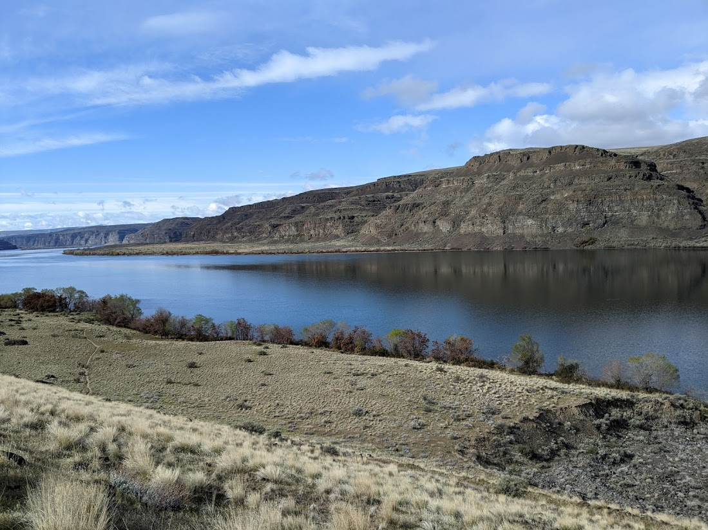
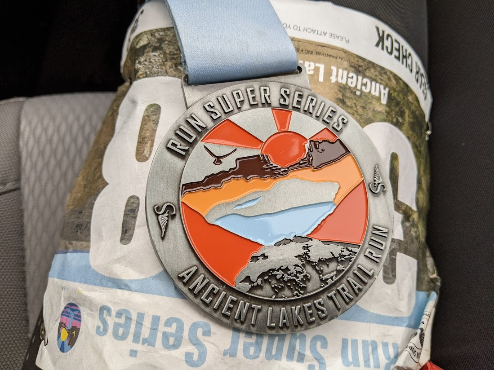

Stick to the plan, trust the process, do it long enough and you’ll reach your goal, finish the race, get that medal or whatever tickles your fancy. Most times that works, we put in the work, celebrate, sign up for the next challenge and do it all over again. Its all fun and games until its not. Sure, you have the discipline to follow through with the plan but what if your heart is simply not in it anymore? What do you do when your long runs turn into another item on your to do list; devoid of all the fun you signed up for? What if the plan is bleeding you dry? Your course of action will likely be influenced by your personality but if you’re anything like most runners, you’ll prefer to honor your commitment. I should know, I recently went through a rut while training for my first ultra race and managed to drag myself to recovery. If you are going through something similar, I hope this note to my future self at least resonates with you, if not inspire you to get back on your feet (pun intended!). Here are a few things that worked for me.
- Check your biochemicals
In other words, get your blood tested ASAP. Before the mind games begin, let the proffesionals rule out any physiological issues you’re likely unaware of. One of the major culprits for me was severe anemia that not only made training significantly harder but also bruised my already fragile athletic confidence. If your physiology is not optimal, give yourself time and space to recover, see if the rut persists; if it does, read on.

- Diagnose your life
The territory of training comes with a lot of work and expectations. We put in the effort and expect some sort of improvement. In ideal conditions it should work but unfortunately life is never ideal. What happens between training sessions is just as important as the sessions themselves. Are you getting enough sleep? What other stressors are you ignoring? Are you stretching yourself too thin? Have you been training for too long? Whatever it is, acknowledge that it adds non-trivial weight to your plan. Life is never ideal but its a good idea to be realistic. Its okay to forfeit your goal because your plate is already full; races come and go but you only live once.

- Take it easy
Its in our DNA to continously push ourselves but its okay to tone it down sometimes. It takes introspection to recognize burnout but when you do, give yourself the gift of recovery. Its okay to run slower if that will make it more enjoyable, its more than ok run shorter distances if it sparks more joy, heck its more than ok to skip that race. Running is a journey and you have nothing to prove to anyone but yourself. There is a reason proffesional athletes have an off-season and its not because they want to slack-off. In a similar spirit take as long of a break as you need, your body will thank you for it.

- Find fulfillment in other avenues.
I know running is important to you and you probably structure your life around it but believe it or not you can find joy in other things too. You may find it in other sports, family or hobbies that don’t involve any form of exertion. You’ll never know unless you try so forget training and let yourself grow in other areas. Heck, fun is a totally valid reason to do anything, self-improvement is great but life is so much more than that.

- Lean into community.
I’m writing this because a runner I know publicly declared that they were going through burnout. It not only validated my experience but also made my load feel so much lighter. Its true what they say, a problem shared is a problem solved. There is no need to suffer alone when sharing is an option, the runners community is one of the most supportive out there. Talk about it, get some social miles, there is a very good chance you’ll find relief either mental or practical.
Having said that, don’t be like me. I suffered through months of anemia before having it diagnosed. Maybe I would have known earlier had I talked about it, maybe it would self resolve if I took the time to rest; I know for sure I would have suffered less if I wasn’t so hard on myself. In case you are wondering, yes I did finish my race, a very strong finish I have to admit. Having trained through the hardest conditions my body was ready for more than just 34 mileseven though it is the farthest I’ve ever run.

Now that I’ve ticked off this goal, I’m not sure what’s next. I’ve been toying with the idea of running 50 miles, but I’ve also been dreaming of an off season full of short runs, long rides and maybe a pottery class or two. Either way it will be an adventure.